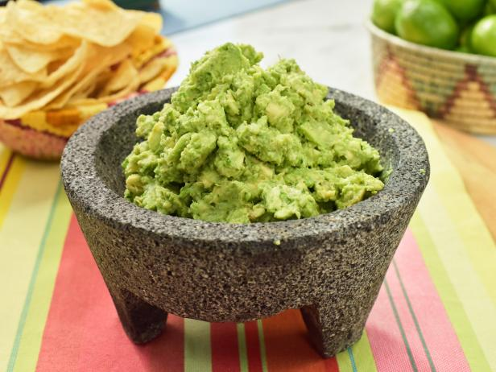

One of the all time classic dips and spreads, you can't go wrong with guacamole. It's a surefire hit at any party, delicious on its own as a dip, served on your mexican food, or even on toast for breakfast
While it's true that avacados are high in fat, it's important to remember that it's heart-healthy monosaturated fats. Consuming avacado rather than unhealthier fats is a great step to take toward lowering your cholesterol levels!
Ingredients
- Ripe Avacado
- Yellow Onion
- A Spicy Chile, such as serrano or jalapeno
- Fresh cilantro leaves
- Fresh lime juice
Steps
- Dice your onion and chile, finely chop cilantro leaves
- Crush onion, chile, half of cilantro leaves and a pinch of kosher salt together in a mortar and pestle
- In a large mixing bowl, mix crushed onion/chile/cilantro paste with avacado and lime juice. Use a whisk to get a perfect textural mix of creamy avacado and thick chunks
- Add remaining cilatro leaves
- Season to taste with extra salt and lime
Return to Homepage